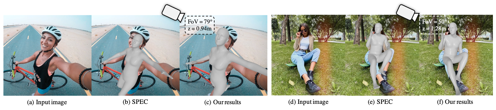

Abstract
As it is hard to calibrate single-view RGB images in the wild, existing 3D human mesh reconstruction methods either use a constant large focal length or estimate one based on the background environment context, which cannot tackle the torso, limb, hand, or face distortion caused by perspective camera projection when the camera is close to the human body. The naive focal length assumptions can harm this task with incorrectly formulated projection matrices.
To solve this, we propose Zolly, the first 3D human mesh reconstruction method focusing on perspective-distorted images. Our approach begins with analysing the reason for perspective distortion, which we find is mainly caused by the relative location of the human body to the camera center. We propose a new camera model and a novel 2D representation, termed distortion image, which describes the 2D dense distortion scale of the human body. We then estimate the distance from distortion scale features rather than environment context features. Afterwards, we integrate the distortion feature with image features to reconstruct the body mesh. To formulate the correct projection matrix and locate the human body position, we simultaneously use perspective and weak-perspective projection loss. Since existing datasets could not handle this task, we propose the first synthetic dataset PDHuman and extend two real-world datasets tailored for this task, all containing perspective-distorted human images. Extensive experiments show that Zolly outperforms existing state-of-the-art methods on both perspective-distorted datasets and the standard benchmark (3DPW).
BibTeX
@inproceedings{wang2023zolly,
title={Zolly: Zoom Focal Length Correctly for Perspective-Distorted Human Mesh Reconstruction},
author={Wang, Wenjia and Ge, Yongtao and Mei, Haiyi and Cai, Zhongang and Sun, Qingping and Wang, Yanjun and Shen, Chunhua and Yang, Lei and Komura, Taku},
booktitle={ICCV},
year={2023}
}